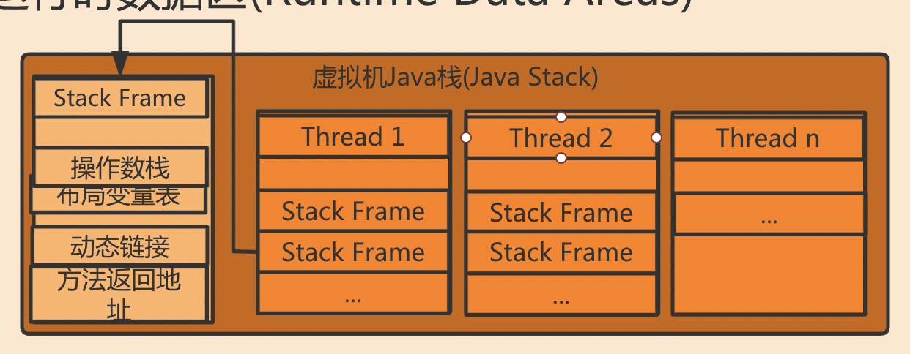
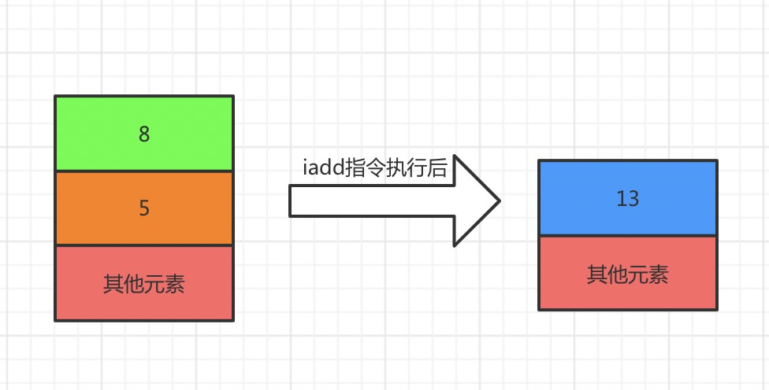

运行时数据区
/ / 点击 /运行时数据区也就是JVM运行时的内存区域，这里主要划分为堆区、方法区、虚拟机栈、本地方法栈和PC寄存器。

- 堆区：
堆区是这其中最大的一块区域，保存几乎所有创建出来的对象实例，这块区域是线程共享的，堆区是垃圾回收的主要区域，因此也叫“GC堆”,在GC回收时采用分代收集算法，所以堆区分为新生代和老年代。堆区在物理上时不连续的，在逻辑中看作是连续的。在堆区分配内存给对象实例时如果内存不足，会抛出OutOfMemoryError异常。
Minor Gc和Major Gc(Full GC)：Minor Gc是指新生代垃圾回收的动作，新创建的对象都会在新生代，所以Minor Gc相对频繁，回收速度相对也快；Major Gc(Full GC)时老年代的垃圾回收动作，Major Gc(Full GC)回收频率较慢，速度也较慢。 - 方法区：
方法区线程共享，方法去存储类的信息、常量、静态变量以及运行时常量池(Runtime Constant Pool:常量不一定只能在编译期产生，运行期间也可能产生新的常量，这些常量被放在运行时常量池中，例如通过String.intern()将String放入常量池)。 - 虚拟机栈和本地方法栈：
虚拟机栈每个线程在创建时都会创建一个虚拟机栈，内部是由一个个的栈帧组成(Stack Frame)，一个栈帧就对应一个Java方法调用。
它主管Java程序的运行，保存方法的局部变量（8中基本数据类型、对象引用地址）、部分结果，并参与方法的调用和返回。
虚拟机栈的大小允许是固定的或者是动态的：虚拟机栈大小固定情况下，如果线程请求分配的栈容量超过了虚拟机栈允许的最大容量就会报StackOverFlowError异常。
虚拟机栈大小动态的情况下，当虚拟机栈请求扩展容量而这时内存不足JVM就会抛出OutOfMemoryError异常，同样在创建线程时如果没有足够的内存空间提供给虚拟机栈，也会报OutOfMemoryError异常。
每个栈帧包含：局部变量表、操作数栈、动态链接和方法返回地址。
1.局部变量表：
局部变量表存储方法参数和定义在方法内的局部变量，局部变量表的存储单位时slot（变量槽），存储的数据类型包括基本数据类型、引用数据类型和返回地址类型。
局部变量表的大小是在编译期间就确定下来的。
2.操作数栈：
操作数栈在方法执行的过程中根据字节码指令写或者提取数据（入栈和出栈）。

3.动态链接（Dynamic Linking）：
即指向运行时常量池的引用它是栈帧内部指向运行时常量池中该栈帧所属方法的引用。动态链接的作用是为将符号应用转换为调用方法的直接引用。
4.方法返回地址（return address）：
方法返回地址存放调用该方法的PC寄存器的值。方法退出救市栈帧出栈的过程，此时需要恢复上层方法的局部变量表、操作数栈，将返回值压入调用者的操作数栈中，更新PC寄存器，调用者继续执行接下来的指令。
异常完成退出不会给上层调用者产生任何返回值
本地方法栈结构与Java虚拟机栈相同，只是它服务的是本地方法，也有些虚拟机中将本地方法栈和Java虚拟机栈合二为一。
- PC寄存器（Program Counter Register）：
PC寄存器用来存放下一行执行指令的地址，由执行引擎读取下条指令。根据是一块很小的内存区域，每个线程都有自己的PC寄存器，它是线程私有的区域，生命周期与线程的生命周期保持一致。PC寄存器是JVM规范中唯一一个不会发生OutOfMemory的区域，也不存在GC。PC寄存器可以保证线程切换时指令不会发生异常，在来回切换后可以回到切换前执行位置继续执行。
全文完。